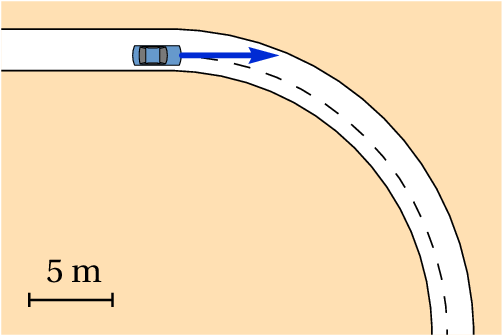

As fortes acelerações sentidas numa montanha russa não são devidas
apenas aos aumentos e diminuições de velocidade, mas são causadas
também pelo movimento curvilíneo. A taxa de aumento da velocidade é
apenas uma das componentes da aceleração, a aceleração tangencial. A
outra componente da aceleração depende da velocidade e do raio de
curvatura da trajetória como se demonstra neste capítulo.
3.1. Versor tangencial
Em cada ponto de uma trajetória pode definir-se um
versor tangencial
,
na direção tangente à trajetória e no sentido em que a posição
aumenta. A figura 3.1 mostra o versor tangencial em três
pontos A, B e P de uma trajetória.
Figura 3.1: Versor tangencial
em três pontos da
trajetória.
Observe-se que no ponto P existem dois versores tangenciais. Um deles
é tangente à curva entre B e P e o outro é tangente à curva entre P e
Q. O vetor velocidade de um corpo que segue essa trajetória será
sempre na mesma direção do versor tangencial (o sentido pode ser o
mesmo ou oposto). Nos pontos como P, onde existem dois vetores
tangenciais, a velocidade é necessariamente nula; o corpo fica
momentaneamente em repouso nesse ponto, começando logo a deslocar-se
em outra direção diferente à que seguia antes de parar.
Nos pontos onde a velocidade não é nula, existe sempre um único versor
tangencial
, que define a direção do vetor
velocidade. Ou seja, a velocidade vetorial pode ser escrita,
(3.1)
Conforme referido no capítulo 2, a velocidade
vetorial
é igual à derivada do vetor posição
(3.2)
O vetor posição
não tem de ter nenhuma relação com o versor
tangencial, já que
depende do ponto que esteja a ser usado como
origem do referencial (ver figura 3.2). No entanto, o vetor
deslocamento
sim é independente da escolha da origem
e, assim sendo, a equação 3.2 garante que o vetor velocidade é
independente da escolha da origem do referencial.
Figura 3.2: Deslocamento vetorial entre duas posições
e
.
Se
for o vetor deslocamento durante um intervalo de
tempo
(figura 3.2), a distância percorrida
durante esse intervalo,
, é sempre maior ou igual que o
módulo de
. A distância percorrida é medida sobre a
trajetória, enquanto que o módulo do deslocamento é medido no segmento
de reta entre os pontos inicial e final.
O módulo de
só é igual a
quando a
trajetória é reta, com versor tangencial constante. No limite quando
for muito pequeno, os dois pontos estarão muito próximos
na trajetória e, assim sendo, a direção de
será
aproximadamente a mesma direção do versor tangencial e o módulo de
será aproximadamente igual a
; isto é,
o vetor deslocamento é aproximadamente igual a
. A derivada do vetor posição é então,
O valor da velocidade, em qualquer movimento, é sempre igual à derivada
da posição na trajetória,
, em ordem ao tempo. Este resultado explica
porquê no capítulo 1 denominou-se "velocidade" à derivada
,
já que
não é apenas uma componente da velocidade mas sim o
valor da velocidade.
3.2. Versor normal
A aceleração vetorial
é igual à derivada da velocidade em
ordem ao tempo e, como tal, derivando o lado direito da
equação 3.4 obtém-se a expressão da aceleração em relação
ao versor tangencial:
(3.5)
Figura 3.3: Variação do versor
tangencial.
Observe-se que a derivada do vetor tangencial não é nula, porque esse
vetor não é necessariamente igual em diferentes instantes. A
figura 3.3 mostra como calcular a derivada de
. Deslocando os dois versores tangenciais dos
pontos A e B da figura 3.1 para um ponto comum, o aumento de
no intervalo desde A até B é o vetor
que une os dois vetores.
Sendo o módulo de
igual a 1, os dois versores
na figura 3.3 descrevem um arco de
círculo com raio 1 e ângulo
. Se o ângulo for medido
em radianos, o comprimento desse arco será igual a
. Se o intervalo de tempo
for
aproximadamente zero, os dois pontos considerados, A e B, estarão
muito próximos na trajetória, o vetor
será perpendicular à trajetória e o seu módulo será aproximadamente
igual ao arco de círculo
; conclui-se que a derivada
de
é,
(3.6)
em que
é o versor normal,
perpendicular à trajetória, e
é a
velocidade angular. Substituindo essa
derivada na equação 3.5, obtém-se a expressão para a aceleração:
(3.7)
Concluindo, a aceleração é um vetor com componentes tangente e normal
(perpendicular) à trajetória. A componente na direção tangente,
, é a aceleração tangencial já introduzida no
capítulo 1. A componente normal da
aceleração é igual ao produto do
valor da velocidade
pelo valor da velocidade angular
,
(3.8)
Tendo em conta que os versores
e
são perpendiculares em todos os pontos da
trajetória, a equação 3.7 implica que o
módulo da aceleração,
, é o comprimento da hipotenusa de um
triângulo retângulo em que os catetos são as componentes tangencial e
normal da aceleração; o teorema de Pitágoras para esse triângulo é
então,
(3.9)
O ângulo de rotação do versor tangencial,
, é
também igual ao ângulo de rotação do versor normal
. A figura 3.4 mostra os versores normais nos
mesmos pontos da trajetória mostrados na figura 3.1. Observe-se
que no ponto A existem dois versores normais, com a mesma direção mas
sentidos opostos, porque a trajetória curva-se para cima antes do ponto A,
mas a partir do ponto A começa a curvar-se para baixo. Esse tipo de ponto,
onde o sentido da curvatura muda, chama-se
ponto de inflexão.
Figura 3.4: Versores tangencial e normal em alguns pontos da trajetória.
No ponto P da figura 3.4 existem duas direções normais, porque,
como foi discutido na secção anterior, existem dois versores tangenciais.
Em qualquer ponto o versor normal aponta no sentido em que a trajetória se
curva, excepto no caso de uma trajetória retilínea, em que existem
infinitos versores perpendiculares ao versor tangencial
.
Figura 3.5: Raio de curvatura.
A figura 3.5 mostra o versor normal no ponto inicial A (no
instante
) e o ponto final B (no instante
)
durante um intervalo de tempo
. Se
é muito
pequeno, as direções dos dois versores cruzam-se num ponto comum C. As
distâncias desde C até os pontos A e B são diferentes (
e
), mas serão iguais no limite
,
em que o ponto C aproxima-se do centro de curvatura da curva. A
distância desde o centro de curvatura num instante e o ponto da
trajetória, nesse mesmo instante, é o raio de curvatura,
, da
trajetória.
Em cada ponto da trajetória existem
um centro e
um raio de curvatura. Cada percurso infinitesimal de comprimento
pode ser aproximado por um arco de circunferência de raio
e ângulo
; a distância percorrida é o
comprimento desse arco,
. Assim sendo,
conclui-se que o valor da velocidade angular é,
(3.10)
Ou seja, em cada ponto da trajetória o valor da velocidade angular
é igual ao valor da velocidade,
, dividida
pelo raio de curvatura
nesse ponto. Usando este resultado, a
componente normal da aceleração,
, pode ser escrita do
modo seguinte
(3.11)
O versor normal e a componente normal da aceleração, apontam sempre no
sentido do centro de curvatura. Como tal, a componente normal da
aceleração,
, também costuma chamar-se
aceleração centrípeta.
Observe-se que a aceleração tangencial,
, pode ser positiva
ou negativa, mas a aceleração normal, ou centrípeta, é sempre
positiva, porque o produto
é sempre
positivo (
e
ambos aumentam, se o movimento é no sentido
do versor tangencial, ou ambos diminuem se o movimento é no sentido
oposto).
Exemplo 3.1
A posição de uma partícula, em função do tempo
, é dada pela
expressão (SI):
Determine a expressão para o raio de curvatura da trajetória em função
do tempo e calcule o raio de curvatura em
e
.
Resolução: Para determinar a expressão do raio de curvatura é
necessário saber as expressões do valor da velocidade e da componente
normal da aceleração, em função do tempo. Essas expressões podem ser
obtidas a partir da velocidade e da aceleração. Usando o Maxima
calculam-se esses vetores do modo seguinte
Designando por v e a, os módulos desses vetores, iguais à raiz
quadrada do produto escalar de cada vetor com si próprio (o produto
escalar no Maxima obtém-se colocando um ponto entre os vetores)
obtém-se:
Observe-se que o valor da aceleração é constante, o que implica uma
trajetória parabólica ou linear. Para calcular a componente normal da
aceleração, calcula-se primeiro a componente tangencial da aceleração,
,
(%i6)at: diff (v, t);
(%o6)
e, usando a equação 3.9, obtém-se a componente normal da
aceleração:
(%i7)an: ratsimp (sqrt (a^2 - at^2));
(%o7)
As componentes tangencial e normal da aceleração dependem do tempo,
embora o valor da aceleração seja constante; isso já aponta para o
facto de que a curvatura da trajetória não será constante e, como tal,
a trajetória será parabólica. Usando a equação 3.11
determina-se a expressão do raio de curvatura:
No caso em que o raio de curvatura
é constante e o centro de
curvatura permanece fixo, a trajetória é uma circunferência e o
movimento é circular, como no caso ilustrado
na figura 3.6. Para determinar a posição em cada instante,
basta um único grau de liberdade, que pode ser a posição na
circunferência,
, ou o ângulo
.
Figura 3.6: Duas posições numa trajetória de um movimento circular.
A relação entre o ângulo e a posição na trajetória, se a origem usada
para medir as duas e o sentido positivo são os mesmos (ver
figura 3.6), é
(3.12)
Sendo
constante, derivando os dois lados da equação anterior
obtém-se,
(3.13)
em que
é a velocidade angular. A
equação 3.13 é a mesma equação 3.10, que aqui
foi obtida no caso particular do movimento circular, em que
é
constante, mas trata-se de uma equação geral, válida em qualquer
movimento. Derivando os dois lados da equação 3.13 em ordem
ao tempo obtém-se,
(3.14)
onde
é a
aceleração angular.
A aceleração centrípeta é dada pela equação 3.11, que pode
ser escrita também em função do valor da velocidade angular,
(3.15)
No caso particular em que a velocidade angular é constante, a
velocidade linear também será constante, as acelerações angular e
tangencial serão nulas e o movimento chama-se movimento circular
uniforme. Nesse caso, como a
velocidade angular é constante, a derivada
pode
calcular-se dividindo o ângulo num intervalo de tempo qualquer, pelo
valor desse intervalo de tempo:
(3.16)
Num intervalo de tempo igual ao período,
, do movimento circular uniforme, o ângulo corresponde a uma volta
completa,
, e a equação anterior conduz a
uma expressão para o período,
(3.17)
A frequência de rotação,
,
igual ao inverso do período, é o número do voltas que o ponto dá por
unidade de tempo.
A relação entre o ângulo de rotação
e os valores da
velocidade angular
e da aceleração angular
, é
análoga à relação entre a posição na trajetória,
, o valor da
velocidade,
, e a aceleração tangencial,
,
(3.18)
Estas são as equações cinemáticas para o movimento de rotação, que
podem ser resolvidas usando os mesmos métodos usados no
capítulo 1. As equações 3.12, 3.13 e
3.14 mostram que as variáveis cinemáticas de translação (
,
,
) são todas iguais ao produto da respetiva variável
cinemática de rotação, (
,
,
), pelo raio de
curvatura
.
3.4. Rotação dos corpos rígidos
O corpo rígido na figura 3.7 está em movimento. Dois pontos
a e b, nas posições
e
, têm
velocidades
e
no mesmo
instante
. Se o movimento do corpo fosse de translação sem rotação,
as velocidades de todos os pontos deviam ser todas iguais, a cada
instante, e, como tal, as trajetórias de todos os pontos no corpo
seria a mesma curva. Como vimos no capítulo 1, nesse caso bastava
estudar o movimento de um ponto qualquer no corpo.
Figura 3.7: Corpo rígido em movimento.
Como as velocidades dos pontos a e b na figura 3.7, são
diferentes, conclui-se que o movimento não é de translação. A posição
do ponto b relativa ao ponto a, é
,
que não permanece constante, já que os pontos a e b estão a
deslocar-se em diferentes direções e com rapidez diferente. No
entanto, o módulo dessa posição relativa,
(3.19)
deverá permanecer constante, porque o corpo é rígido. Como tal, a sua
derivada em ordem ao tempo deverá ser nula:
(3.20)
onde,
é a velocidade do ponto b,
relativa ao ponto a, igual à derivada de
em ordem ao tempo. A equação
anterior implica:
(3.21)
Esse resultado é geral para quaisquer dois pontos a e b no corpo
rígido, permitindo concluir que:
A velocidade relativa entre dois pontos num corpo rígido é
sempre perpendicular à posição relativa entre eles.
Visto desde um ponto a, o ponto b permanecerá sempre à mesma
distância,
, deslocando-se na superfície da
esfera de raio
, com centro em a
(figura 3.8). Todos os outros pontos no corpo rígido
deslocam-se em esferas com centro em a, e com diferentes raios.
Figura 3.8: Posição e velocidade relativas a um ponto no corpo rígido.
A cada instante
, a velocidade de b relativa ao ponto a é tangente
a uma circunferência na superfície da esfera de raio
; essa circunferência poderá ter raio igual
a
ou menor (figura 3.9). Outro
ponto c, que esteja à mesma distância de a,
, deverá ter
velocidade tangente a outra circunferência paralela à circunferência
de b. Se assim não fosse, a distância entre b e c estaria a variar,
que não é possível porque o corpo é rígido. E o sentido do movimento
dos dois pontos b e c, nessas circunferências, deverá ser o mesmo
(sentido de rotação indicado na figura 3.9).
Figura 3.9: Movimento de dois pontos, b e c, à mesma distância do ponto a.
Como os planos em que se deslocam os pontos b e c, em relação ao ponto
a, são paralelos, as duas circunferências na esfera podem ser
projetadas num mesmo plano, chamado plano de rotação, com centro no
ponto a, como mostra a figura 3.10. Todos os outros pontos à
mesma distância terão velocidades tangentes a circunferências com
centro em a e raio menor ou igual que o raio da esfera,
. Em particular, existirão dois pontos
e
, na interseção da esfera com a reta perpendicular ao plano de
rotação passando pelo centro a, que estão em repouso em relação ao
ponto a
(
). Como
tal, a velocidade dos pontos no eixo de rotação é a mesma:
Figura 3.10: Movimento dos pontos b e c no plano de rotação, em relação ao ponto a.
A reta que passa por a e z é o eixo de rotação do corpo
rígido. Qualquer outro ponto no corpo rígido, que não esteja no eixo
de rotação, terá velocidade relativa tangente a alguma circunferência
com centro em a, no plano de rotação. O ângulo
,
que se deslocam todos esses pontos, durante um intervalo
, deverá ser exatamente o mesmo, para garantir que a
distância entre todos eles permanece constante. A velocidade angular
do corpo rígido é:
(3.22)
Como tal, o valor da velocidade relativa de b, ou de qualquer outro
ponto, é igual à sua distância até o eixo de rotação, vezes a
velocidade angular do corpo:
(3.23)
onde
é a distância desde o ponto b até o eixo de
rotação que passa pelo ponto a.
O movimento do corpo rígido é então a sobreposição do movimento dum
ponto qualquer nele (no nosso caso a), mais rotação em torno de um
eixo que passa por esse ponto. Se em vez do ponto a fosse escolhido
outro ponto d, o eixo de rotação teria exatamente a mesma direção, mas
passaria por d. A velocidade angular seria exatamente a mesma do que
em relação ao ponto a, e o movimento do corpo seria a sobreposição do
movimento do ponto d, mais rotação em torno do eixo de rotação que
passa por d. Em diferentes instantes a direção do eixo de rotação, e a
velocidade angular, podem ser diferentes, mas a cada instante o eixo e
a velocidade angular são os mesmos, independentemente do ponto usado
como referência. Resumindo,
A cada instante existe uma direção no espaço (eixo de
rotação) tal que se a posição relativa entre dois pontos num corpo
rígido for paralela a essa direção, as suas velocidades serão
iguais. A velocidade relativa entre dois pontos num corpo rígido,
dividida pela distância entre um deles e o eixo de rotação que passa
pelo outro, é igual à velocidade angular
do corpo nesse
instante.
Exemplo 3.2
A figura mostra um mecanismo
biela-manivela, usado para transformar
movimento circular em movimento retilíneo ou vice-versa. A manivela é
a barra OQ, que roda à volta de um eixo fixo no ponto O, e a biela é a
barra PQ, que liga a manivela a um pistão
que só pode deslocar-se
na horizontal. No instante em que a manivela faz um ângulo de
40° com a horizontal, na posição que mostra a figura, a
velocidade do ponto P é 60 cm/s, para a esquerda. Determine as
velocidades angulares da biela e da manivela, nesse instante, sabendo
que
é igual a 7.5 cm e
é igual a 20 cm.
Resolução. Como o ponto O está fixo, a velocidade do ponto Q
é a mesma velocidade de Q relativa a O, que deve ser perpendicular à
barra OQ, porque os dois pontos fazem parte da manivela, que é um
corpo rígido. Como tal, a velocidade
do ponto Q
faz um ângulo de 40° com a vertical, como mostra a figura
seguinte:
Como o ponto Q também faz parte da biela PQ, a velocidade
, do ponto Q, relativa ao ponto P, deverá ser
perpendicular ao segmento
. O ângulo
que faz com a vertical é o mesmo ângulo que o segmento
faz com a horizontal. Esse ângulo pode ser
determinado usando a lei dos senos no triângulo OPQ:
Como tal,
. Os valores das velocidades do ponto Q,
relativas aos pontos O e Q, serão iguais às velocidades angulares das
barras, vezes os seus comprimentos (usaremos distâncias em cm e
velocidades em cm/s):
onde
é a velocidade angular da manivela e
é a velocidade angular da biela. Observe-se que na
figura acima, estamos a admitir que
é no sentido
oposto aos ponteiros do relógio e
é no sentido dos
ponteiros do relógio.
Em coordenadas cartesianas, com eixo dos
horizontal, de esquerda
para direita, e eixo dos
vertical, de baixo para cima, as
componentes da velocidade do ponto Q são:
(3.24)
Mas a velocidade do ponto Q pode também ser calculada somando a
velocidade do ponto P,
, mais a
velocidade de Q relativa a P:
(3.25)
Igualando as componentes das duas expressões 3.24 e
3.25, encontram-se as velocidades angulares:
Observe-se que as duas velocidades angulares obtidas resolvendo as
equações têm sinais positivos, o que indica que os sentidos que
admitimos na figura estão corretos. Podiamos ter admitido sentidos
opostos, mudando na figura o sentido das velocidades de Q relativas a
O e P, e o resultado teria dado valores negativos para as velocidades
angulares, indicando que os sentidos não eram os corretos.
3.5. Vetores velocidade angular e aceleração angular
É conveniente definir a
velocidade angular como um vetor
,
na direção do eixo de rotação, tal como se mostra na
figura 3.11. O vetor
tem módulo igual ao
valor absoluto da velocidade angular,
, direção paralela ao
eixo de rotação e sentido segundo a regra da mão direita para a
rotação, ou seja, imaginando um sistema de eixos cartesianos em que o
eixo dos
aponta na direção e sentido de
, o corpo
rígido roda de forma a que o eixo dos
se aproxime do eixo dos
. Também pode fechar-se o punho direito e estender o dedo polegar
apontando no sentido de
e o sentido de rotação é o
sentido em que se curvam os outros 4 dedos.
Figura 3.11: Vetores velocidade angular e posição.
A vantagem de usar um vetor é que
contem a informação
da velocidade angular
, direção do eixo de rotação e sentido
da rotação. A equação 3.23 pode ser escrita de forma
vetorial. Se
for a posição relativa de um ponto qualquer no
corpo, em relação ao ponto de referência, a distância
desde o
ponto até o eixo de rotação que passa pelo ponto de referência, é
igual a
, onde
é o ângulo entre os vetores
e
tal como mostra a figura 3.11. O módulo
da velocidade relativa do ponto é então:
(3.26)
O vetor velocidade relativa,
, do ponto na posição relativa
é perpendicular aos dois vetores
e
e o seu módulo é igual ao produto dos módulos desses dois vetores,
vezes o seno do ângulo entre eles. Essa é precisamente a definição do
produto vetorial entre os vetores
e
, que
vamos denotar com o operador
. A velocidade é então o produto
da vetorial da velocidade angular vezes o vetor posição:
(3.27)
Observe-se que, por definição, o produto na equação 3.27 é um
vetor no sentido da regra da mão direita, desde o primeiro vector,
, até o segundo,
.
O movimento circular dum ponto, em relação ao ponto de referência, com
raio
e velocidade angular
, implica aceleração tangencial
e aceleração centrípeta
. Mas a o vetor
aceleração relativa pode também ser obtido derivando o vetor
velocidade relativa (equação 3.27):
(3.28)
A derivada do vetor velocidade angular é outro vetor
,
chamado aceleração angular, e
a derivada do vetor posição relativa é o vetor velocidade relativa,
dado pela equação 3.27. A expressão vetorial da aceleração
relativa é:
(3.29)
O primeiro termo é a aceleração tangencial e o segundo termo a
aceleração normal ou centrípeta.
3.5.1. Produto vetorial
O produto vetorial entre quaisquer dois vetores
e
é outro vetor
, com módulo igual ao
produto dos módulos de
e
e o seno do ângulo entre
eles. Em particular, o módulo do produto vetorial
é
. A
figura 3.11 mostra o ângulo
entre os vetores; note-se
que
é sempre positivo, porque
está entre 0 e
. O produto
é igual a
, já que essa distância é
medida no plano de rotação, que é perpendicular ao vetor
. Assim sendo, o módulo de
é
igual a
, que é igual ao módulo de
.
A direção de
é perpendicular ao plano
formado por
e
, seguindo a regra da mão direita de
para
: com o punho da mão direita fechado e o
polegar estendido, se os outros quatro dedos rodam no sentido de
para
, então o dedo polegar indica o sentido de
. A figura 3.11 mostra o plano formado por
e
, que é perpendicular ao plano
, de modo
que a direção de
é paralela ao plano
e perpendicular ao plano de
e
; o sentido de
obtém-se pela regra da mão direita de
para
.
O produto vetorial não é comutativo; ou seja,
e
não são iguais porque têm o mesmo módulo e a
mesma direção, mas sentidos opostos. Sendo o ângulo de um vetor
consigo próprio zero, o produto
é nulo. Em
particular,
= 0. O produto
vetorial de dois versores perpendiculares é outro versor perpendicular
ao plano deles; é fácil conferir que
,
e
. Usando estas propriedades
e a lei distributiva do produto vetorial, obtém-se uma expressão para
o produto
em função das componentes cartesianas
dos vetores
(3.30)
resultado esse que pode ser escrito de forma mais compacta através de um
determinante:
(3.31)
Observe-se que na figura 3.11 o triângulo sombrejado tem
base igual a
e altura igual a
; assim sendo, a sua área
é igual a metade do módulo do produto vetorial da velocidade angular
pelo vetor posição:
. Em
geral,
A área do triângulo formado por dois vetores com
origem comum é igual a metade do módulo do produto
vetorial dos vetores.
3.5.2. Rotação plana
Quando a direção do eixo de rotação permanece sempre igual, diz-se que
a rotação do corpo rígido é plana. Nesse
caso o plano de rotação é sempre o mesmo e pode ser definido como o
plano
. Como tal, o vetor velocidade angular é:
(3.32)
em que
pode depender do tempo, e a sua derivada é
. O vetor aceleração angular estará também na
mesma direção do eixo de rotação:
(3.33)
O vetor posição relativa de um ponto qualquer no corpo é
. Os produtos
vetoriais nas equações 3.27 e 3.29, em coordenadas
cartesianas (equação 3.31), conduzem às seguintes expressões
para a velocidade relativa e as componentes tangencial e normal da
aceleração relativa:
(3.34)
(3.35)
Como tal, a coordenada
do ponto não interessa. Basta apenas saber
a posição da sua projeção no plano
(plano de rotação):
(3.36)
e o módulo desse vetor,
, é a distância desde o ponto até o eixo de
rotação.
Exemplo 3.3
Cola-se um extremo de um fio numa roldana com raio de 5 cm,
enrolando-o e pendurando um bloco do outro extremo (ver figura). No
instante inicial o bloco e a roldana estão em repouso e o ponto P da
roldana encontra-se à mesma altura do seu centro C. O bloco começa a
descer, com aceleração constante de valor igual a
/4. Determine a
velocidade e a aceleração do ponto P, dois segundos após o instante
inicial.
Resolução. O eixo de rotação da roldana é perpendicular ao
plano da figura, e permanece fixo. Como tal, a rotação da roldana é
uma rotação plana e o plano de rotação é o plano da figura, que
designaremos de plano
.
O ponto de referencia pode ser qualquer ponto na roldana, mas como os
pontos no eixo da roldana estão em repouso, neste caso é conveniente
escolher como ponto de referência o ponto C no centro da roldana. Em
função dos eixos definidos na figura ao lado, a posição do ponto P,
após a roldana ter rodado um ângulo
desde a posição inicial,
é:
(3.37)
Para calcular a velocidade do ponto P, é necessária também a
velocidade angular, que pode ser obtida a partir do valor da
velocidade do bloco. Para encontrar uma expressão para o valor da
velocidade do bloco, integra-se a equação
Como todos os pontos do fio têm esse mesmo valor da velocidade e os
pontos da superfície acompanham o movimento do fio, esse será também o
valor da velocidade dos pontos na superfície da roldana e o valor da
velocidade angular da roldana será
. A rotação é no
sentido anti-horário (velocidade angular positiva), com velocidade
angular:
A velocidade do ponto P obtém-se a partir da equação 3.34
para rotação plana (ou simplesmente derivando a
expressão 3.37, tendo em conta que a derivada de
é
):
Observe-se que a equação 3.34 dá a velocidade relativa do
ponto, mas neste caso, em que o ponto de referência está em repouso, a
velocidade relativa é a mesma velocidade absoluta.
A aceleração angular é a derivada da velocidade angular em ordem ao
tempo,
e as componentes da aceleração do ponto P
obtêm-se a partir da equação 3.35 (ou derivando a expressão
da velocidade do ponto P):
Para encontrar a expressão para
em função do tempo,
integra-se a equação
, com
e
substituindo os valores de
,
e
, em
unidades SI, obtêm-se a velocidade e a aceleração nesse instante,
3.6. Movimentos de translação e de rotação dependentes
Numa roda em movimento sobre uma superfície, sem derrapar, o ângulo de
rotação e o deslocamento da roda estão relacionados. Na
figura 3.12, uma roda de raio
desloca-se para a direita,
sobre uma superfície, sem derrapar.
Figura 3.12: Roda que se desloca rodando sem derrapar.
Num instante inicial um ponto P da roda está em contacto com a
superfície; após alguns instantes, a roda rodou um ângulo
e o
centro da roda percorreu uma distância
. O arco de circunferência
deverá ser igual à distância percorrida
, já que todos
os pontos nesse arco estiveram em contacto com pontos da superfície.
(3.38)
derivando os dois lados da equação, obtém-se a relação entre a
velocidade do centro C e a velocidade angular,
(3.39)
e derivando novamente, observa-se que a aceleração de tangencial de C
é igual ao produto do raio pela aceleração angular:
(3.40)
No caso das roldanas, se a roldana roda sem o fio derrapar sobre a sua
superfície, os pontos na superfície da roldana terão a mesma
velocidade do fio e subtraindo a velocidade do centro da roldana
obtém-se a velocidade do ponto na superfície da roldana, relativa à
roldana; o valor dessa velocidade relativa, dividido pelo raio da
roldana, deverá ser igual à velocidade angular da roldana.
Exemplo 3.4
A roldana fixa no sistema da figura tem raio de 3 cm e a roldana móvel tem
raio de 5 cm. Calcule o valor da velocidade do carrinho e das velocidades
angulares das roldanas, no instante em que o cilindro desce com velocidade
de valor 1.5 m/s, admitindo que o fio não derrapa nas roldanas.
Resolução. Este sistema já foi estudado na
secção 2.5 onde mostrou-se que o valor da velocidade do
carrinho é o dobro da velocidade do cilindro. Assim sendo, o valor da
velocidade do carrinho é 3 m/s.
Na roldana fixa, o valor da velocidade dos pontos na superfície será o
mesmo que no carrinho, 3 m/s e, como tal, o valor da velocidade
angular da roldana fixa é,
O centro da roldana móvel também desce a 1.5 m/s. No ponto da sua
superfície, no lado direito, o fio está estático e, assim sendo, esse
ponto desloca-se para cima, em relação ao centro, com velocidade de
valor 1.5 m/s. O ponto na superfície da roldana, no lado esquerdo,
desloca-se para baixo, com a velocidade do carrinho, 3 m/s, de modo
que em relação ao centro da roldana desloca-se para baixo, com
velocidade de valor 1.5 m/s. O valor da velocidade angular da roldana
móvel é,
A parte do fio no lado direito da roldana móvel, que permanece
estático, pode ser considerado como uma superfície vertical em que a
roldana roda como uma roda sobre uma superfície. O valor da velocidade
do centro da roda, que é igual ao valor da velocidade do cilindro, é
igual ao produto do valor da velocidade angular da roda pelo raio da
roda. O valor da velocidade do ponto mais à esquerda na roda, que é o
valor da velocidade do carrinho, é o produto do valor da velocidade
angular da roda pelo diâmetro da roda. Essa é outra forma de explicar
porque o valor da velocidade do carrinho é o dobro do valor da
velocidade do cilindro, porque o diâmetro da roda é o dobro do seu
raio.
Perguntas
(Para conferir a sua resposta, clique nela.)
No intervalo de tempo
, o valor da velocidade de um objeto em
função do tempo verifica a expressão
. Se a
trajetória do objeto for uma reta, qual das cinco funções na lista
poderá ser a expressão correta para o valor da aceleração?
Um objeto com movimento circular tem aceleração angular com valor
constante
radiano/s2. Se o objeto parte do
repouso, quanto tempo, em segundos, demorará a completar as primeiras
3 voltas?
Um ponto num objeto descreve numa trajetória curva, com velocidade de
valor constante. Qual das seguintes afirmações é verdadeira?
A aceleração é perpendicular à trajetória.
O valor da aceleração é constante.
A aceleração é tangente à trajetória.
A aceleração é constante.
A aceleração é nula.
Um projétil é lançado com velocidade inicial com valor
e direção
inclinada que faz um ângulo
com o plano horizontal. Determine
o raio de curvatura da trajetória parabólica no instante inicial.
O movimento circular de uma roda de raio
é transmitido para
outra roda de raio
, através de uma correia que se desloca com as
rodas, sem derrapar. Qual é a relação entre os valores das velocidades
angulares
e
de ambas rodas?
Problemas
No intervalo de tempo
, os valores da velocidade e da
aceleração de uma partícula com movimento em 3 dimensões são dadas
pelas funções:
e
(unidades SI). Encontre, no mesmo intervalo de tempo, as expressões
para:
(a) A componente tangencial da aceleração.
(b) A componente normal da aceleração.
(c) O raio de curvatura.
Um motorista entra numa curva a 72 km/h, e trava, fazendo com que o
valor da velocidade diminua a uma taxa constante de 4.5 km/h cada
segundo. Observando a figura, faça uma estimativa do raio de curvatura
da estrada e calcule o valor da aceleração do automóvel 4 segundos
após ter iniciado a travagem.

A equação da trajetória de um objeto é:
(unidades SI e ângulos em radianos).
(a) Demonstre que o movimento do objeto é circular uniforme.
(b) Determine o valor da velocidade angular do objeto e o seu período.
(c) Encontre a posição do centro da trajetória circular.
Um piloto de corridas de aviões executa um loop vertical, igual
a meia circunferência de raio 1200 m. O valor da velocidade no ponto
A, no início do loop, é 160 m/s e no ponto C, no fim do loop, é
140 m/s. Calcule o valor da aceleração no ponto B, no meio do loop,
admitindo que a aceleração tangencial permanece constante durante o
loop (observe que também é negativa).
Dois carros A e B passam por uma curva usando trajetórias
diferentes. A figura mostra a curva delimitada pela reta C. O carro B
faz um percurso semicircular com raio de 102 m; o carro A avança uma
distância em linha reta, a seguir segue um semicírculo com raio 82 m e
termina com outro trajeto em linha reta. Os dois carros deslocam-se à
velocidade máxima que podem ter para conseguir fazer a curva, que para
o tipo de pneus usados corresponde à velocidade que produz uma
aceleração normal de
, onde
é a aceleração da
gravidade. Calcule o tempo que demora cada um dos carros a fazer a
curva.
(a) Calcule a área do triângulo com vértices nos pontos A, B e
C, com coordenadas cartesianas A = (3, 5, 4), B = (
,2,1) e
C = (2,
,2).
(b) Demonstre a Lei dos senos,
para um triângulo com lados de comprimentos
,
e
,
em que
,
e
são os ângulos opostos aos lados
,
e
.
Uma partícula segue a trajetória que mostra a figura, partindo do
repouso em A e aumentando a velocidade com aceleração constante até o
ponto B. Desde B até E mantém velocidade constante de 10 m/s e a
partir de E começa a abrandar, com aceleração constante, até parar no
ponto F. A distância AB é 60 cm, CD é 20 cm e EF é 45 cm; o raio do
arco BC é 60 cm e o raio do arco DE é 45 cm. Determine:
(a) O módulo da aceleração da partícula em cada um dos trajetos
AB, BC, CD, DE e EF.
(b) O tempo total do movimento desde A até F e a velocidade
média nesse percurso.
A roda na figura tem duas partes com raios de 3 cm e 6 cm, que estão
em contacto com duas barras horizontais A e B. A barra A desloca-se
para a direita, com valor da velocidade de 10 m/s e a barra B
desloca-se para a esquerda com valor da velocidade de 35 m/s, enquanto
a roda mantém o contacto com as duas barras, sem derrapar. Determine
para que lado se desloca o centro O da roda e calcule os valores da
velocidade do ponto O e da velocidade angular da roda.
Uma roda com 20 cm de raio desloca-se, sem derrapar, sobre uma
superfície plana, ao longo do eixo dos
. No instante
o centro
da roda encontra-se em
e
cm e os pontos P e Q da roda são
os pontos que estão em
com
e
cm. O valor da
velocidade do centro da roda é 2 m/s, constante. (a) Calcule
quanto tempo demora a roda a dar duas voltas completas. (b)
Represente os gráficos das trajetórias dos pontos P e Q durante o
tempo que a roda demora a dar duas voltas.
Um cilindro com raio de 4 cm está colado a uma roda com 6 cm de raio
que se encontra sobre uma superfície horizontal plana, tal como mostra
a figura. Uma corda foi enrolada à volta do cilindro e está a ser
puxada horizontalmente para a direita, com velocidade constante
de valor 2.5 cm/s. O movimento da corda faz rodar a roda
sobre a superfície horizontal, sem derrapar.
(a) Determine o valor da velocidade angular da roda.
(b) Diga em que sentido se desloca o ponto O, no eixo da roda e do
cilindro, e determine o valor da sua velocidade.
(c) Determine quantos centímetros de corda são enrolados à volta do
cilindro a cada segundo.
Na máquina representada na figura, todas as roldanas têm raio igual a
5 cm. Determine os valores das velocidades angulares das quatro
roldanas, quando o anel A for puxado para baixo com velocidade de
valor constante 2 m/s.
A figura mostra o mecanismo biela-manivela analisado no
exemplo 3.2 (as distâncias estão em cm). Observe que há três
variáveis que mudam em função do tempo:
,
e
; e as suas derivadas são a velocidade do pistão e as
velocidades angulares da manivela e da biela:
,
e
. Mas basta uma dessas 3
variáveis para encontrar as outras duas. Outra forma diferente de
resolver o mesmo problema é a seguinte:
(a) Encontre uma expressão para
que dependa
apenas do ângulo
. Derive essa expressão para obter a
velocidade angular da manivela, em função da velocidade do pistão e
do ângulo
.
(b) Encontre a relação entre os senos dos ângulos
e
. Derive essa relação e substitua o cosseno de
em
termos do ângulo
, encontrando assim uma expressão para a
velocidade angular da biela, em função da velocidade angular da
manivela e do ângulo
.
(c) Substitua os valores do exemplo 3.2,
e
cm/s, nos resultados das duas
alíneas anteriores, para conferir os resultados obtidos no exemplo.
Respostas
Perguntas:1. E. 2. B. 3. A. 4. E. 5. A.
Problemas
(a)
(b)
(c)
Com raio igual a 16 m, o valor da aceleração é aproximadamente 14 m/s2
(a) O cálculo do módulo do vetor velocidade dá um valor
constante
e as componentes obtidas para a aceleração são
e
. Assim sendo, o movimento é
uniforme, porque o valor da velocidade permanece constante e
circular, porque o movimento é num plano e o raio de curvatura,
, é constante. (b)
rad/s,
(segundos). (c) coordenadas (4, 0).
18.85 m/s2
11.74 s para o carro A e 11.33 s para o carro B.
(a) 14.79 (b) Os três produtos (
),
(
) e (
) são todos iguais ao dobro
da área do triângulo; igualando cada par de produtos demonstra-se
cada uma das igualdades.
(a) 83.33 m/s2 em AB, 111.11 m/s2 em EF,
166.67 m/s2 em BC e 222.22 m/s2 em DE. (b) 0.395 s
e 7.34 m/s.
Para a esquerda, com
m/s e
.
(a) 1.26 s (b)
(a) 1.25 s−1, no sentido dos ponteiros do relógio.
(b) Para a direita com velocidade de valor 7.5 cm/s.
(c) 5 cm (a corda enrola-se no cilindro, porque este
roda no sentido dos ponteiros do relógio).
De esquerda para direita, 5 s−1,
10 s−1, 20 s−1 e
40 s−1.
(a)
(b)
Pergunta 1, resposta A: Errada
No movimento retilíneo a aceleração é igual à aceleração tangencial,
igual à derivada da velocidade em ordem a
.
(clique para continuar)
Pergunta 1, resposta B: Errada
No movimento retilíneo a aceleração é igual à aceleração tangencial,
igual à derivada da velocidade em ordem a
.
(clique para continuar)
Pergunta 1, resposta C: Errada
No movimento retilíneo a aceleração é igual à aceleração tangencial,
igual à derivada da velocidade em ordem a
.
(clique para continuar)
Pergunta 1, resposta D: Errada
No movimento retilíneo a aceleração é igual à aceleração tangencial,
igual à derivada da velocidade em ordem a
.
(clique para continuar)
Pergunta 1, resposta E: Certa
No movimento retilíneo a aceleração é igual à aceleração tangencial,
igual à derivada da velocidade em ordem a
.
(clique para continuar)
Pergunta 2, resposta A: Errada
É necessario integrar a aceleração angular, em ordem ao tempo, para
determinara a expressão da velocidade angular e a seguir integrar
novamente para determinar a relação entre o ângulo e o tempo. Três
voltas corresponde a um ângulo de
.
(clique para continuar)
Pergunta 2, resposta B: Certa
É necessario integrar a aceleração angular, em ordem ao tempo, para
determinara a expressão da velocidade angular e a seguir integrar
novamente para determinar a relação entre o ângulo e o tempo. Três
voltas corresponde a um ângulo de
.
(clique para continuar)
Pergunta 2, resposta C: Errada
É necessario integrar a aceleração angular, em ordem ao tempo, para
determinara a expressão da velocidade angular e a seguir integrar
novamente para determinar a relação entre o ângulo e o tempo. Três
voltas corresponde a um ângulo de
.
(clique para continuar)
Pergunta 2, resposta D: Errada
É necessario integrar a aceleração angular, em ordem ao
tempo, para determinara a expressão da velocidade angular e
a seguir integrar novamente para determinar a relação entre
o ângulo e o tempo. Três voltas corresponde a um ângulo de
.
(clique para continuar)
Pergunta 2, resposta E: Errada
É necessario integrar a aceleração angular, em ordem ao tempo, para
determinara a expressão da velocidade angular e a seguir integrar
novamente para determinar a relação entre o ângulo e o tempo. Três
voltas corresponde a um ângulo de
.
(clique para continuar)
Pergunta 3, resposta A: Certa
A aceleração só tem componente normal porque a aceleração tangencial
(derivada do valor da velocidade) é nula.
(clique para continuar)
Pergunta 3, resposta B: Errada
A aceleração normal, relacionada com a mudança da direção
da velocidade, pode ter qualquer valor e, como tal, a celeração
total pode variar.
(clique para continuar)
Pergunta 3, resposta C: Errada
A aceleração total não pode ser tangente à trajetória porque a
componente tangencial da aceleração (derivada do valor da velocidade)
é nula.
(clique para continuar)
Pergunta 3, resposta D: Errada
Existem movimentos curvilíneos com aceleração constante. Um exemplo é
o movimento parabólico de um projétil. No entanto, como a aceleração
normal está sempre a mudar de direção, é necessário que exista também
aceleração tangencial para compensar a variação da aceleração
normal. Neste caso, como não há aceleração tangencial, a aceleração
total não pode ser constante.
(clique para continuar)
Pergunta 3, resposta E: Errada
Se a aceleração fosse nula, o movimento deveria ser retilíneo mas
neste caso a trajetória é curva.
(clique para continuar)
Pergunta 4, resposta A: Errada
O raio de cuvatura é igual à velocidade ao quadrado, dividida pela
aceleração normal. A aceleração normal encontra-se projetando o vetor
da aceleração da gravidade na direção do vetor velocidade.
(clique para continuar)
Pergunta 4, resposta B: Errada
O raio de cuvatura é igual à velocidade ao quadrado,
dividida pela aceleração normal. A aceleração normal
encontra-se projetando o vetor da aceleração da gravidade na
direção do vetor velocidade.
(clique para continuar)
Pergunta 4, resposta C: Errada
O raio de cuvatura é igual à velocidade ao quadrado, dividida pela
aceleração normal. A aceleração normal encontra-se projetando o vetor
da aceleração da gravidade na direção do vetor velocidade.
(clique para continuar)
Pergunta 4, resposta D: Errada
O raio de cuvatura é igual à velocidade ao quadrado, dividida pela
aceleração normal. A aceleração normal encontra-se projetando o vetor
da aceleração da gravidade na direção do vetor velocidade.
(clique para continuar)
Pergunta 4, resposta E: Certa
O raio de cuvatura é igual à velocidade ao quadrado, dividida pela
aceleração normal. A aceleração normal encontra-se projetando o vetor
da aceleração da gravidade na direção do vetor velocidade.
(clique para continuar)
Pergunta 5, resposta A: Certa
A velocidade de todos os pontos da correia deve ser a mesma e, como
tal, as velocidades dos pontos nas superfícies das duas rodas devem
ser iguais.
(clique para continuar)
Pergunta 5, resposta B: Errada
A velocidade de todos os pontos da correia deve ser a mesma e, como
tal, as velocidades dos pontos nas superfícies das duas rodas devem
ser iguais.
(clique para continuar)
Pergunta 5, resposta C: Errada
A velocidade de todos os pontos da correia deve ser a mesma e, como
tal, as velocidades dos pontos nas superfícies das duas rodas devem
ser iguais.
(clique para continuar)
Pergunta 5, resposta D: Errada
A velocidade de todos os pontos da correia deve ser a mesma e, como
tal, as velocidades dos pontos nas superfícies das duas rodas devem
ser iguais.
(clique para continuar)
Pergunta 5, resposta E: Errada
A velocidade de todos os pontos da correia deve ser a mesma e, como
tal, as velocidades dos pontos nas superfícies das duas rodas devem
ser iguais.


 Um piloto de corridas de aviões executa um loop vertical, igual
a meia circunferência de raio 1200 m. O valor da velocidade no ponto
A, no início do loop, é 160 m/s e no ponto C, no fim do loop, é
140 m/s. Calcule o valor da aceleração no ponto B, no meio do loop,
admitindo que a aceleração tangencial permanece constante durante o
loop (observe que também é negativa).
Um piloto de corridas de aviões executa um loop vertical, igual
a meia circunferência de raio 1200 m. O valor da velocidade no ponto
A, no início do loop, é 160 m/s e no ponto C, no fim do loop, é
140 m/s. Calcule o valor da aceleração no ponto B, no meio do loop,
admitindo que a aceleração tangencial permanece constante durante o
loop (observe que também é negativa).
 Dois carros A e B passam por uma curva usando trajetórias
diferentes. A figura mostra a curva delimitada pela reta C. O carro B
faz um percurso semicircular com raio de 102 m; o carro A avança uma
distância em linha reta, a seguir segue um semicírculo com raio 82 m e
termina com outro trajeto em linha reta. Os dois carros deslocam-se à
velocidade máxima que podem ter para conseguir fazer a curva, que para
o tipo de pneus usados corresponde à velocidade que produz uma
aceleração normal de
, onde
é a aceleração da
gravidade. Calcule o tempo que demora cada um dos carros a fazer a
curva.
Dois carros A e B passam por uma curva usando trajetórias
diferentes. A figura mostra a curva delimitada pela reta C. O carro B
faz um percurso semicircular com raio de 102 m; o carro A avança uma
distância em linha reta, a seguir segue um semicírculo com raio 82 m e
termina com outro trajeto em linha reta. Os dois carros deslocam-se à
velocidade máxima que podem ter para conseguir fazer a curva, que para
o tipo de pneus usados corresponde à velocidade que produz uma
aceleração normal de
, onde
é a aceleração da
gravidade. Calcule o tempo que demora cada um dos carros a fazer a
curva.
 Uma partícula segue a trajetória que mostra a figura, partindo do
repouso em A e aumentando a velocidade com aceleração constante até o
ponto B. Desde B até E mantém velocidade constante de 10 m/s e a
partir de E começa a abrandar, com aceleração constante, até parar no
ponto F. A distância AB é 60 cm, CD é 20 cm e EF é 45 cm; o raio do
arco BC é 60 cm e o raio do arco DE é 45 cm. Determine:
Uma partícula segue a trajetória que mostra a figura, partindo do
repouso em A e aumentando a velocidade com aceleração constante até o
ponto B. Desde B até E mantém velocidade constante de 10 m/s e a
partir de E começa a abrandar, com aceleração constante, até parar no
ponto F. A distância AB é 60 cm, CD é 20 cm e EF é 45 cm; o raio do
arco BC é 60 cm e o raio do arco DE é 45 cm. Determine:
 A roda na figura tem duas partes com raios de 3 cm e 6 cm, que estão
em contacto com duas barras horizontais A e B. A barra A desloca-se
para a direita, com valor da velocidade de 10 m/s e a barra B
desloca-se para a esquerda com valor da velocidade de 35 m/s, enquanto
a roda mantém o contacto com as duas barras, sem derrapar. Determine
para que lado se desloca o centro O da roda e calcule os valores da
velocidade do ponto O e da velocidade angular da roda.
A roda na figura tem duas partes com raios de 3 cm e 6 cm, que estão
em contacto com duas barras horizontais A e B. A barra A desloca-se
para a direita, com valor da velocidade de 10 m/s e a barra B
desloca-se para a esquerda com valor da velocidade de 35 m/s, enquanto
a roda mantém o contacto com as duas barras, sem derrapar. Determine
para que lado se desloca o centro O da roda e calcule os valores da
velocidade do ponto O e da velocidade angular da roda.


 Na máquina representada na figura, todas as roldanas têm raio igual a
5 cm. Determine os valores das velocidades angulares das quatro
roldanas, quando o anel A for puxado para baixo com velocidade de
valor constante 2 m/s.
Na máquina representada na figura, todas as roldanas têm raio igual a
5 cm. Determine os valores das velocidades angulares das quatro
roldanas, quando o anel A for puxado para baixo com velocidade de
valor constante 2 m/s.

No movimento retilíneo a aceleração é igual à aceleração tangencial, igual à derivada da velocidade em ordem a .
(clique para continuar)